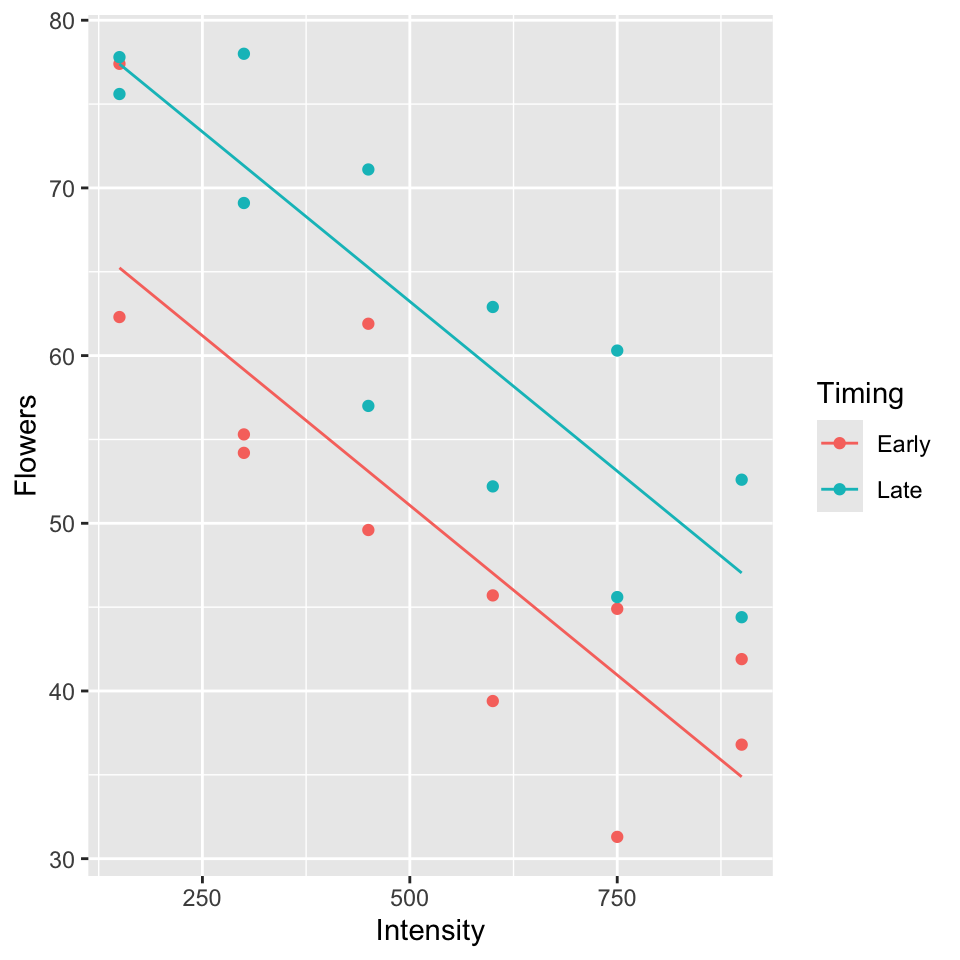
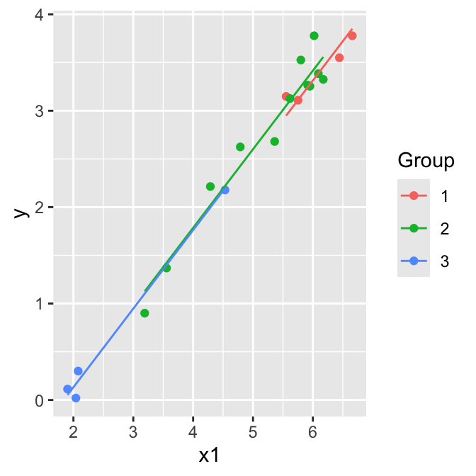

7 Special cases of multiple regression
7.1 Categorical and continuous predictors (binary categories)
Example (from Ramsey and Schafer (2002) pg 236, 245):
\(Y\): average number of flowers per plant (meadowfoam).
Light intensity: 150, 300, 450, 600, 750, 900 (\(\mu\) mol/\(m^2\)/sec)
Timing: Timing of onset of light treatment Early/Late. Coded 0/1.
Suppose data is in the table below (every 2nd row) and consider the following models:
Parallel lines model (model A):
\[\mathbb{E}(y)= \beta_0+\beta_1(timing)+ \beta_2 (light)\]
Separate lines model (model B):
\[\mathbb{E}(y)= \beta_0+\beta_1(timing)+ \beta_2 (light) + \beta_3 (timing \times light)\]
- Give the design matrix and the parameter vector for both models
- Test \(H_0: \beta_3 = 0\).
## Rows: 24
## Columns: 4
## $ Flowers <dbl> 62.3, 77.4, 55.3, 54.2, 49.6, 61.9, 39.4, 45.7, 31.3, 44.9, …
## $ Timing <chr> "Early", "Early", "Early", "Early", "Early", "Early", "Early…
## $ Time <int> 0, 0, 0, 0, 0, 0, 0, 0, 0, 0, 0, 0, 1, 1, 1, 1, 1, 1, 1, 1, …
## $ Intensity <int> 150, 150, 300, 300, 450, 450, 600, 600, 750, 750, 900, 900, …
Parallel lines model:
\[\mathbb{E}(y)= \beta_0+\beta_1(timing)+ \beta_2 (light)\]
\[\mathbf{X} = \begin{bmatrix} 1 & 0 & 150 \\ 1 & 0 & 300\\ 1 & 0 & 450 \\ 1 & 0 & 600\\ 1 & 0 & 750\\ 1 & 0 & 900\\ 1 & 1 & 150 \\ 1 & 1 & 300\\ 1 & 1 & 450 \\ 1 & 1 & 600 \\ 1 & 1 & 750\\ 1 & 1 & 900 \\ \end{bmatrix}\]
\(\boldsymbol{\beta} = \begin{bmatrix} \beta_0 \\ \beta_1 \\ \beta_2\\ \end{bmatrix}\)
Separate lines model:
\[\mathbb{E}(y)= \beta_0+\beta_1(timing)+ \beta_2 (light) + \beta_3 (timing \times light)\]
\[\mathbf{X} = \begin{bmatrix} 1 & 0 & 150 &0 \\ 1 & 0 & 300 &0 \\ 1 & 0 & 450 &0 \\ 1 & 0 & 600 &0 \\ 1 & 0 & 750 &0 \\ 1 & 0 & 900 &0 \\ 1 & 1 & 150 &150 \\ 1 & 1 & 300 &300 \\ 1 & 1 & 450 &450 \\ 1 & 1 & 600 &600 \\ 1 & 1 & 750 &750 \\ 1 & 1 & 900 &900 \\ \end{bmatrix}\]
\[\boldsymbol{\beta} = \begin{bmatrix} \beta_0 \\ \beta_1 \\ \beta_2\\ \beta_3\\ \end{bmatrix}\]
To test \(H_0: \beta_3 = 0\), P-value = 0.910, so cannot reject \(H_0\) (See table of coefficients, output below).
Model A:
##
## Call:
## lm(formula = Flowers ~ Intensity + Timing, data = flowers.data)
##
## Residuals:
## Min 1Q Median 3Q Max
## -9.652 -4.139 -1.558 5.632 12.165
##
## Coefficients:
## Estimate Std. Error t value Pr(>|t|)
## (Intercept) 71.305833 3.273772 21.781 6.77e-16 ***
## Intensity -0.040471 0.005132 -7.886 1.04e-07 ***
## TimingLate 12.158333 2.629557 4.624 0.000146 ***
## ---
## Signif. codes: 0 '***' 0.001 '**' 0.01 '*' 0.05 '.' 0.1 ' ' 1
##
## Residual standard error: 6.441 on 21 degrees of freedom
## Multiple R-squared: 0.7992, Adjusted R-squared: 0.78
## F-statistic: 41.78 on 2 and 21 DF, p-value: 4.786e-08Model B:
##
## Call:
## lm(formula = Flowers ~ Intensity * Timing, data = flowers.data)
##
## Residuals:
## Min 1Q Median 3Q Max
## -9.516 -4.276 -1.422 5.473 11.938
##
## Coefficients:
## Estimate Std. Error t value Pr(>|t|)
## (Intercept) 71.623333 4.343305 16.491 4.14e-13 ***
## Intensity -0.041076 0.007435 -5.525 2.08e-05 ***
## TimingLate 11.523333 6.142360 1.876 0.0753 .
## Intensity:TimingLate 0.001210 0.010515 0.115 0.9096
## ---
## Signif. codes: 0 '***' 0.001 '**' 0.01 '*' 0.05 '.' 0.1 ' ' 1
##
## Residual standard error: 6.598 on 20 degrees of freedom
## Multiple R-squared: 0.7993, Adjusted R-squared: 0.7692
## F-statistic: 26.55 on 3 and 20 DF, p-value: 3.549e-07
model.matrix(fit2)## (Intercept) Intensity TimingLate Intensity:TimingLate
## 1 1 150 0 0
## 2 1 150 0 0
## 3 1 300 0 0
## 4 1 300 0 0
## 5 1 450 0 0
## 6 1 450 0 0
## 7 1 600 0 0
## 8 1 600 0 0
## 9 1 750 0 0
## 10 1 750 0 0
## 11 1 900 0 0
## 12 1 900 0 0
## 13 1 150 1 150
## 14 1 150 1 150
## 15 1 300 1 300
## 16 1 300 1 300
## 17 1 450 1 450
## 18 1 450 1 450
## 19 1 600 1 600
## 20 1 600 1 600
## 21 1 750 1 750
## 22 1 750 1 750
## 23 1 900 1 900
## 24 1 900 1 900
## attr(,"assign")
## [1] 0 1 2 3
## attr(,"contrasts")
## attr(,"contrasts")$Timing
## [1] "contr.treatment"
7.2 Categorical and continuous predictors (more than two categories)
Example: (from Ramsey and Schafer (2002)):
\(Y\): Measure of energy
\(X_1\): Measure of weight
Group: Type of flyer (1,2,3). Z1, Z2, Z3 (dummy variables).
## Rows: 20
## Columns: 6
## $ Group <int> 1, 1, 1, 1, 2, 2, 2, 2, 2, 2, 2, 2, 2, 2, 2, 2, 3, 3, 3, 3
## $ x1 <dbl> 6.658011, 6.442540, 5.552960, 5.752573, 3.190476, 3.555348, 4.28…
## $ y <dbl> 3.77734812, 3.54961737, 3.14845333, 3.10906094, 0.90016136, 1.36…
## $ G1 <int> 1, 1, 1, 1, 0, 0, 0, 0, 0, 0, 0, 0, 0, 0, 0, 0, 0, 0, 0, 0
## $ G2 <int> 0, 0, 0, 0, 1, 1, 1, 1, 1, 1, 1, 1, 1, 1, 1, 1, 0, 0, 0, 0
## $ G3 <int> 0, 0, 0, 0, 0, 0, 0, 0, 0, 0, 0, 0, 0, 0, 0, 0, 1, 1, 1, 1
flying.data <- flying.data |>
mutate(Group = as.factor(Group))
flying.data |>
ggplot(aes(x = x1, y = y, col = Group)) +
geom_point()Parallel lines model (model A):
\[\mathbb{E}(y)= \beta_0+\beta_1 z_2+ \beta_2 z_3 + \beta_3 x_1\]
Separate lines model (model B): \[\mathbb{E}(y)= \beta_0+\beta_1 z_2+ \beta_2 z_3 + \beta_3 x_1 + \beta_4 x_1 z_2+ \beta_5 x_1 z_3\]
Hypothesis testing:
Test \(H_0: \beta_4 = \beta_5 = 0\) by comparing the two models using an F-test.
Test \(H_0: \beta_1 = \beta_2 = 0\) by comparing the parallel lines model to the model \(\mathbb{E}(y)= \beta_0+\beta_3 x_1\) using an F-test.
Give the design matrix and the parameter vector for both models.
Test \(H_0: \beta_4 = \beta_5 = 0\), i.e.
\(H_0:\) Model A is correct
\(H_A:\) Model B is preferable to Model A
\[\begin{align*} F & =\frac{(\mbox{SSE}(A)-\mbox{SSE}(B))/(k-q)}{\mbox{SSE}(B)/(n-p)}\\ & =\frac{(0.5533- 0.5049)/(5-3)}{0.5049/(20-6)}\\ & =\frac{0.0242}{0.0361}\\ & = 0.67.\\ \end{align*}\]
\(F_{(2,14)}(0.95) = 3.73 > 0.67\) so we cannot reject \(H_0\), model A is OK.
- Test \(H_0: \beta_1 = \beta_2 = 0\), i.e. let model C = one group model:
\[\mathbb{E}(y)= \beta_0+ \beta_3 x_1 \]
\(H_0:\) Model C is correct
\(H_A:\) Model A is preferable to Model C
\[\begin{align*} F & =\frac{(\mbox{SSE}(C)-\mbox{SSE}(A))/(k-q)}{\mbox{SSE}(A)/(n-p)}\\ & =\frac{\mbox{SSR}(A|C)/(3-1)}{0.5533/(20-4)}\\ & =\frac{0.0296/2}{0.0346}\\ & = 0.43\\ \end{align*}\]
We don’t need to see the fit for Model C, take Seq SS.
\(F_{(2,16)}(0.95) = 3.63 > 0.43\) so we cannot reject \(H_0\), model C is adequate.
##
## Call:
## lm(formula = y ~ x1 + Group, data = flying.data)
##
## Residuals:
## Min 1Q Median 3Q Max
## -0.23224 -0.12199 -0.03637 0.12574 0.34457
##
## Coefficients:
## Estimate Std. Error t value Pr(>|t|)
## (Intercept) -1.57636 0.28724 -5.488 4.96e-05 ***
## x1 0.81496 0.04454 18.297 3.76e-12 ***
## Group2 0.10226 0.11418 0.896 0.384
## Group3 0.07866 0.20268 0.388 0.703
## ---
## Signif. codes: 0 '***' 0.001 '**' 0.01 '*' 0.05 '.' 0.1 ' ' 1
##
## Residual standard error: 0.186 on 16 degrees of freedom
## Multiple R-squared: 0.9815, Adjusted R-squared: 0.9781
## F-statistic: 283.6 on 3 and 16 DF, p-value: 4.464e-14
anova(fitA)## Analysis of Variance Table
##
## Response: y
## Df Sum Sq Mean Sq F value Pr(>F)
## x1 1 29.3919 29.3919 849.9108 2.691e-15 ***
## Group 2 0.0296 0.0148 0.4276 0.6593
## Residuals 16 0.5533 0.0346
## ---
## Signif. codes: 0 '***' 0.001 '**' 0.01 '*' 0.05 '.' 0.1 ' ' 1##
## Call:
## lm(formula = y ~ x1 * Group, data = flying.data)
##
## Residuals:
## Min 1Q Median 3Q Max
## -0.25152 -0.12643 -0.00954 0.08124 0.32840
##
## Coefficients:
## Estimate Std. Error t value Pr(>|t|)
## (Intercept) -0.2024 1.2613 -0.161 0.8748
## x1 0.5898 0.2061 2.861 0.0126 *
## Group2 -1.3784 1.2952 -1.064 0.3053
## Group3 -1.2681 1.2854 -0.987 0.3406
## x1:Group2 0.2456 0.2134 1.151 0.2691
## x1:Group3 0.2149 0.2236 0.961 0.3529
## ---
## Signif. codes: 0 '***' 0.001 '**' 0.01 '*' 0.05 '.' 0.1 ' ' 1
##
## Residual standard error: 0.1899 on 14 degrees of freedom
## Multiple R-squared: 0.9832, Adjusted R-squared: 0.9771
## F-statistic: 163.4 on 5 and 14 DF, p-value: 6.696e-12
anova(fitB)## Analysis of Variance Table
##
## Response: y
## Df Sum Sq Mean Sq F value Pr(>F)
## x1 1 29.3919 29.3919 815.0383 8.265e-14 ***
## Group 2 0.0296 0.0148 0.4100 0.6713
## x1:Group 2 0.0484 0.0242 0.6718 0.5265
## Residuals 14 0.5049 0.0361
## ---
## Signif. codes: 0 '***' 0.001 '**' 0.01 '*' 0.05 '.' 0.1 ' ' 1
anova(fitA, fitB)## Analysis of Variance Table
##
## Model 1: y ~ x1 + Group
## Model 2: y ~ x1 * Group
## Res.Df RSS Df Sum of Sq F Pr(>F)
## 1 16 0.55332
## 2 14 0.50487 2 0.04845 0.6718 0.5265##
## Call:
## lm(formula = y ~ x1, data = flying.data)
##
## Residuals:
## Min 1Q Median 3Q Max
## -0.21143 -0.14422 -0.04284 0.09681 0.37695
##
## Coefficients:
## Estimate Std. Error t value Pr(>|t|)
## (Intercept) -1.46826 0.13716 -10.71 3.1e-09 ***
## x1 0.80861 0.02684 30.13 < 2e-16 ***
## ---
## Signif. codes: 0 '***' 0.001 '**' 0.01 '*' 0.05 '.' 0.1 ' ' 1
##
## Residual standard error: 0.18 on 18 degrees of freedom
## Multiple R-squared: 0.9806, Adjusted R-squared: 0.9795
## F-statistic: 907.6 on 1 and 18 DF, p-value: < 2.2e-16
anova(fitC)## Analysis of Variance Table
##
## Response: y
## Df Sum Sq Mean Sq F value Pr(>F)
## x1 1 29.3919 29.3919 907.64 < 2.2e-16 ***
## Residuals 18 0.5829 0.0324
## ---
## Signif. codes: 0 '***' 0.001 '**' 0.01 '*' 0.05 '.' 0.1 ' ' 1

7.3 Two way anova: two categorical predictors
Two way analysis of variance (ANOVA) without interactions is the same a regression with two categorical explanatory variables.
Two way analysis of variance (ANOVA) with interactions is the same a regression with two categorical explanatory variables plus a third categorical explanatory variable for the interaction.
Remember that when the explanatory variable is categorical, conceptually it is recoded using dummy or indicator variables.
Typically:
- Y = response.
- Two predictors A and B are categorical, with \(a\) levels of A and \(b\) levels of B.
7.3.1 Example: paint adhesion
In an experiment to improve paint adhesion, the factors examined were:
- A = application method (\(a = 2\)).
- B = paint type (\(b = 3\)),
It is not correct to find the best paint and then separately find the best application method because that may not be the best overall combination.
paint <- read.csv(here("data", "paint.csv"), header = TRUE)
paint$Primer <- as.factor(paint$Primer)
paint$Method <- as.factor(paint$Method)
paint |>
ggplot(aes(x = Primer, y = Adhesion, colour = Method, group = Method)) +
geom_point(alpha = 0.5)This is an example of experimental data, with \(3 \times 2\) experimental conditions. In this example there are 3 replicates for each experimental condition, i.e there are 18 observations in total. The dataset could be summarized in a 3 by 2 table of means.
In experimental data, the experimenter will often set up the data with equal number of observations per cell. This is described as balanced data.
Observational data is unlikely to be balanced.
7.3.2 Notation
Let \(Y_{ijk}\) be the \(k\)th response at level \(i\) of A and \(j\) of B.
Let \(\mu_{ij} = \mathbb{E}(Y_{ijk})\) be the mean response at level \(i\) of A and \(j\) of B.
The model is
\[Y_{ijk} = \mu_{ij} + \epsilon_{ijk}\]
where \(\epsilon_{ijk} \sim N(0, \sigma^2)\) and are independent.
This is the same as a one way ANOVA model with a single categorical predictor with \(ab\) levels.
The above is known as the means model.
It is convenient to decompose \(\mu_{ij}\) into
\[\mu_{ij} = \mu + \alpha_i + \beta_j + \gamma_{ij}\]
so that
\[Y_{ijk} = \mu + \alpha_i + \beta_j + \gamma_{ij} + \epsilon_{ijk}\]
We can think of these parameters as:
\(\mu\) is the overall level, or mean
\(\alpha_i\) is the additional effect of level \(i\) of A
\(\beta_i\) is the additional effect of level \(j\) of B
\(\gamma_{ij}\) is the interaction effect of level \(i\) of A and \(j\) of B.
The above is known as the effects model.
However, the effects model is overparameterized.
Means model has \(ab\) \(\mu_{ij}\) parameters, and in the effects model parameterisation, we express these \(\mu_{ij}\) in terms of \(1+a+b+ ab\) parameters.
Thus we need to impose \(1+a+b\) identifability constraints.
Standard identifiability constraints are: \(\sum_i \alpha_i = 0\), \(\sum_j \beta_j = 0\), \(\sum_i \gamma_{ij} = 0\) and \(\sum_j \gamma_{ij} = 0\).
7.3.3 Two way ANOVA in regression setup
Let \(A_i\) be indicator for level \(i\) of A.
Let \(B_j\) be indicator for level \(j\) of B.
Then \(A_i B_j\) is an indicator for when A is at level \(i\), B is at level \(j\).
Supposing \(a=2\), \(b=3\), we can rewrite the effects model as \[\begin{align} y = \mu &+ \alpha_1A_1+ \alpha_2A_2 \notag \\ &+ \beta_1B_1+ \beta_2B_2 + \beta_3B_3 \notag \\ &+ \gamma_{11}A_1B_1 + \gamma_{12}A_1B_2 + \gamma_{13}A_1B_3 + \gamma_{21}A_2B_1 + \gamma_{22}A_2B_2 + \gamma_{23}A_2B_3 \\ & + \epsilon \end{align}\]
This regression model is over-parameterized.
If we construct the \(\mathbf{X}\) matrix, the columns are not linearly independent.
This means that the \(\mathbf{X}^T \mathbf{X}\) matrix does not have full rank and its inverse does not exist.
In this context, the obvious identifiability constraints are to set one of the \(\alpha\)’s to zero, i.e. \(\alpha_1 =0\). Also \(\beta_1 =0\) and \(0 = \gamma_{11}= \gamma_{12}=\gamma_{13}=\gamma_{21}\), basically any parameter with an index of 1.
Then the model becomes \[\begin{align} y = \mu &+ \alpha_2A_2 \notag \\ &+ \beta_2B_2 + \beta_3B_3 \notag \\ & + \gamma_{22}A_2B_2 + \gamma_{23}A_2B_3 \\ & + \epsilon \end{align}\]
which has the required number of parameters.
Note that the parameter interpretation depends on the constraints chosen. Here for example the cell means are
7.3.4 Interaction plots:
When we plot means of data, we can assess whether the lines connecting means are parallel or not, indicating interaction or not.
paint_means <- paint |>
group_by(Primer, Method) |>
summarise(Means = mean(Adhesion))
require(gridExtra)
plot1 <- paint_means |>
ggplot(aes(x = Primer, y = Means, colour = Method, group = Method)) +
geom_point(size = 4) + geom_line()
plot2 <-paint_means |>
ggplot(aes(x = Method, y = Means, colour = Primer, group = Primer)) +
geom_point(size = 4) + geom_line()
grid.arrange(plot1, plot2, ncol=2) 
7.3.5 Testing hypotheses
Interactions: Test \(H_0: \gamma_{ij} = 0\), all \(i,j\).
Main effect of A: Test \(H_0: \alpha_{i} = 0\), all \(i\).
Main effect of B: Test \(H_0: \beta_{j} = 0\), all \(j\).
Perform (1) first. Only perform (2) and (3) if there is no evidence of interaction. It does not make sense to test for main effects in the presence of interaction.
7.3.6 Two way ANOVA in R
## (Intercept) Primer2 Primer3 Method2 Primer2:Method2
## 4.2666667 1.0333333 -0.4333333 1.0333333 -0.2666667
## Primer3:Method2
## 0.3000000
anova(fit1)## Analysis of Variance Table
##
## Response: Adhesion
## Df Sum Sq Mean Sq F value Pr(>F)
## Primer 2 4.5811 2.2906 27.8581 3.097e-05 ***
## Method 1 4.9089 4.9089 59.7027 5.357e-06 ***
## Primer:Method 2 0.2411 0.1206 1.4662 0.2693
## Residuals 12 0.9867 0.0822
## ---
## Signif. codes: 0 '***' 0.001 '**' 0.01 '*' 0.05 '.' 0.1 ' ' 1Is there evidence of an interaction between primer and method?
fit1 |> model.matrix() |> head()## (Intercept) Primer2 Primer3 Method2 Primer2:Method2 Primer3:Method2
## 1 1 0 0 0 0 0
## 2 1 0 0 0 0 0
## 3 1 0 0 0 0 0
## 4 1 1 0 0 0 0
## 5 1 1 0 0 0 0
## 6 1 1 0 0 0 0Refit the model:
## (Intercept) Primer2 Primer3 Method2
## 4.2611111 0.9000000 -0.2833333 1.0444444
anova(fit2)## Analysis of Variance Table
##
## Response: Adhesion
## Df Sum Sq Mean Sq F value Pr(>F)
## Primer 2 4.5811 2.2906 26.119 1.884e-05 ***
## Method 1 4.9089 4.9089 55.975 2.960e-06 ***
## Residuals 14 1.2278 0.0877
## ---
## Signif. codes: 0 '***' 0.001 '**' 0.01 '*' 0.05 '.' 0.1 ' ' 1Based on this model, what combination of primer and method are the best to use?
fit2 |>
broom::augment(paint) |>
ggplot(aes(x = Primer, y = Adhesion, col = Method, group = Method)) +
geom_point() +
geom_line(aes(x = Primer, y = .fitted))7.4 Polynomial regression
Data on paper strength and percent of hardwood in the pulp batch from package (Arnholt and Evans 2023).
## Rows: 19
## Columns: 2
## $ tensile <dbl> 6.3, 11.1, 20.0, 24.0, 26.1, 30.0, 33.8, 34.0, 38.1, 39.9, 42…
## $ hardwood <dbl> 1.0, 1.5, 2.0, 3.0, 4.0, 4.5, 5.0, 5.5, 6.0, 6.5, 7.0, 8.0, 9…
dr |>
ggplot(aes(x = hardwood, y = tensile)) +
geom_point()
##
## Call:
## lm(formula = tensile ~ hardwood, data = dr)
##
## Residuals:
## Min 1Q Median 3Q Max
## -25.986 -3.749 2.938 7.675 15.840
##
## Coefficients:
## Estimate Std. Error t value Pr(>|t|)
## (Intercept) 21.3213 5.4302 3.926 0.00109 **
## hardwood 1.7710 0.6478 2.734 0.01414 *
## ---
## Signif. codes: 0 '***' 0.001 '**' 0.01 '*' 0.05 '.' 0.1 ' ' 1
##
## Residual standard error: 11.82 on 17 degrees of freedom
## Multiple R-squared: 0.3054, Adjusted R-squared: 0.2645
## F-statistic: 7.474 on 1 and 17 DF, p-value: 0.01414The straight line does not fit the data. The regression is significant but this does not tell you about goodness of fit.
7.4.1 Model 2: Quadratic regression
Include \(x^2\) as a predictor.
##
## Call:
## lm(formula = tensile ~ poly(hardwood, 2), data = dr)
##
## Residuals:
## Min 1Q Median 3Q Max
## -5.8503 -3.2482 -0.7267 4.1350 6.5506
##
## Coefficients:
## Estimate Std. Error t value Pr(>|t|)
## (Intercept) 34.184 1.014 33.709 2.73e-16 ***
## poly(hardwood, 2)1 32.302 4.420 7.308 1.76e-06 ***
## poly(hardwood, 2)2 -45.396 4.420 -10.270 1.89e-08 ***
## ---
## Signif. codes: 0 '***' 0.001 '**' 0.01 '*' 0.05 '.' 0.1 ' ' 1
##
## Residual standard error: 4.42 on 16 degrees of freedom
## Multiple R-squared: 0.9085, Adjusted R-squared: 0.8971
## F-statistic: 79.43 on 2 and 16 DF, p-value: 4.912e-09Comment: the quadratic model is a better fit. The quadratic term is significant.
plot(fit2,1)Note: we can specify this model in two ways: using poly and \(I(x,2)\). However, \(x\), \(I(x^2)\) etc will be correlated and correlated variables can cause problems. The use of poly() lets you avoid this by producing orthogonal polynomials.
##
## Call:
## lm(formula = tensile ~ hardwood + I(hardwood^2), data = dr)
##
## Residuals:
## Min 1Q Median 3Q Max
## -5.8503 -3.2482 -0.7267 4.1350 6.5506
##
## Coefficients:
## Estimate Std. Error t value Pr(>|t|)
## (Intercept) -6.67419 3.39971 -1.963 0.0673 .
## hardwood 11.76401 1.00278 11.731 2.85e-09 ***
## I(hardwood^2) -0.63455 0.06179 -10.270 1.89e-08 ***
## ---
## Signif. codes: 0 '***' 0.001 '**' 0.01 '*' 0.05 '.' 0.1 ' ' 1
##
## Residual standard error: 4.42 on 16 degrees of freedom
## Multiple R-squared: 0.9085, Adjusted R-squared: 0.8971
## F-statistic: 79.43 on 2 and 16 DF, p-value: 4.912e-09
dr |>
ggplot(aes(x = hardwood, y = tensile)) +
geom_point() +
geom_line(aes(y=fitted(fit2)))+
geom_line(aes(y=fitted(fit2b)), col = 2)7.4.2 Model 3: Cubic regression
##
## Call:
## lm(formula = tensile ~ poly(hardwood, 3), data = dr)
##
## Residuals:
## Min 1Q Median 3Q Max
## -4.6250 -1.6109 0.0413 1.5892 5.0216
##
## Coefficients:
## Estimate Std. Error t value Pr(>|t|)
## (Intercept) 34.1842 0.5931 57.641 < 2e-16 ***
## poly(hardwood, 3)1 32.3021 2.5850 12.496 2.48e-09 ***
## poly(hardwood, 3)2 -45.3963 2.5850 -17.561 2.06e-11 ***
## poly(hardwood, 3)3 -14.5740 2.5850 -5.638 4.72e-05 ***
## ---
## Signif. codes: 0 '***' 0.001 '**' 0.01 '*' 0.05 '.' 0.1 ' ' 1
##
## Residual standard error: 2.585 on 15 degrees of freedom
## Multiple R-squared: 0.9707, Adjusted R-squared: 0.9648
## F-statistic: 165.4 on 3 and 15 DF, p-value: 1.025e-11Comment: the cubic model is a better fit. The quadratic term is significant.
plot(fit3,1)
dr |>
ggplot(aes(x = hardwood, y = tensile)) +
geom_point() +
geom_line(aes(y=fitted(fit3)), col = 2)7.4.3 Model 4: Quartic
##
## Call:
## lm(formula = tensile ~ poly(hardwood, 4), data = dr)
##
## Residuals:
## Min 1Q Median 3Q Max
## -5.1384 -1.0550 -0.3203 1.0779 4.5030
##
## Coefficients:
## Estimate Std. Error t value Pr(>|t|)
## (Intercept) 34.1842 0.5824 58.696 < 2e-16 ***
## poly(hardwood, 4)1 32.3021 2.5386 12.724 4.39e-09 ***
## poly(hardwood, 4)2 -45.3963 2.5386 -17.883 4.87e-11 ***
## poly(hardwood, 4)3 -14.5740 2.5386 -5.741 5.10e-05 ***
## poly(hardwood, 4)4 -3.1647 2.5386 -1.247 0.233
## ---
## Signif. codes: 0 '***' 0.001 '**' 0.01 '*' 0.05 '.' 0.1 ' ' 1
##
## Residual standard error: 2.539 on 14 degrees of freedom
## Multiple R-squared: 0.9736, Adjusted R-squared: 0.9661
## F-statistic: 129.1 on 4 and 14 DF, p-value: 6.994e-11Comment: the quartic term is not significant.
plot(fit4,1)
dr |>
ggplot(aes(x = hardwood, y = tensile)) +
geom_point() +
geom_line(aes(y=fitted(fit4)), col = 2)
7.5 Confounding example
In autumn, small winged fruit called samara fall off maple trees, spinning as they go. A forest scientist studied the relationship between how fast they fell and their “disk loading” (a quantity based on their size and weight). The data give the loadings and fall velocities for fruit from three trees. From Ryan, Joiner, and Rogosa (1994).
- Y = Velocity
- X = Load
- A = Tree: 3 levels
tree <- read.table(here("data", "samara.txt"), header=TRUE)
tree |> glimpse()## Rows: 36
## Columns: 3
## $ Tree <int> 1, 1, 1, 1, 1, 1, 1, 1, 1, 1, 1, 1, 2, 2, 2, 2, 2, 2, 2, 2, 2…
## $ Load <dbl> 0.239, 0.208, 0.223, 0.224, 0.246, 0.213, 0.198, 0.219, 0.241…
## $ Velocity <dbl> 1.34, 1.06, 1.14, 1.13, 1.35, 1.23, 1.23, 1.15, 1.25, 1.24, 1…
tree$Tree <- as.factor(tree$Tree)
tree <- tree[complete.cases(tree),]Some models we could fit:
- Different intercepts, no slope
\[y = \beta_0 + \beta_1z_2 + \beta_2z_3 + \epsilon\]
- Common slope and intercept
\[y = \beta_0 + \beta_1x + \epsilon\]
- Common slope
\[y = \beta_0 + \beta_1x + \beta_2z_2 + \beta_3z_3 + \epsilon\]
- Separate lines
\[y = \beta_0 + \beta_1x + \beta_2z_2 + \beta_3z_3 + \\ \beta_4 x \times z_2 + \beta_5 x \times z_3+ \epsilon\]
Here \(z_i\) is an indicator variable for the \(i\)th level of the factor A.
fit0 <-lm(Velocity~Tree, data=tree)
tree |> ggplot(aes(x = Tree, y = Velocity, color = Tree)) +
geom_point() +
geom_point(aes(y=fitted(fit0)), pch = 3, col= "black")
summary(fit0)##
## Call:
## lm(formula = Velocity ~ Tree, data = tree)
##
## Residuals:
## Min 1Q Median 3Q Max
## -0.300000 -0.082500 0.005833 0.087500 0.250000
##
## Coefficients:
## Estimate Std. Error t value Pr(>|t|)
## (Intercept) 1.23417 0.03676 33.571 < 2e-16 ***
## Tree2 -0.05417 0.05316 -1.019 0.316
## Tree3 -0.28333 0.05199 -5.450 5.37e-06 ***
## ---
## Signif. codes: 0 '***' 0.001 '**' 0.01 '*' 0.05 '.' 0.1 ' ' 1
##
## Residual standard error: 0.1274 on 32 degrees of freedom
## Multiple R-squared: 0.5097, Adjusted R-squared: 0.479
## F-statistic: 16.63 on 2 and 32 DF, p-value: 1.117e-05
fit1 <- lm(Velocity~Load, data=tree)
tree |> ggplot(aes(x = Load, y = Velocity, color = Tree)) +
geom_point() +
geom_line(aes(y=fitted(fit1)))
fit2 <- lm(Velocity~Load+Tree, data=tree)
tree |> ggplot(aes(x = Load, y = Velocity, color = Tree)) +
geom_point() +
geom_line(aes(y=fitted(fit2)))
fit3 <- lm(Velocity~Tree * Load, data=tree)
tree |> ggplot(aes(x = Load, y = Velocity, color = Tree)) +
geom_point() +
geom_line(aes(y=fitted(fit3)))
From the plots above we can see that the velocity is different between the trees. Particularly, tree 3 seems to have the lowest velocity. We can also see that tree 2 has a wide range of velocities.
Is this difference in velocity because of the size of the samara fruits or the tree also affects it? Would we expect a samara of specific load to fall with the same velocity from tree 1 as it would have fallen from tree 3?
We can answer these questions by comparing the models above.
summary(fit3)##
## Call:
## lm(formula = Velocity ~ Tree * Load, data = tree)
##
## Residuals:
## Min 1Q Median 3Q Max
## -0.120023 -0.049465 -0.001298 0.049938 0.145571
##
## Coefficients:
## Estimate Std. Error t value Pr(>|t|)
## (Intercept) 0.5414 0.2632 2.057 0.0488 *
## Tree2 -0.8408 0.3356 -2.505 0.0181 *
## Tree3 -0.2987 0.4454 -0.671 0.5078
## Load 3.0629 1.1599 2.641 0.0132 *
## Tree2:Load 3.7343 1.5000 2.490 0.0188 *
## Tree3:Load 0.8205 2.2837 0.359 0.7220
## ---
## Signif. codes: 0 '***' 0.001 '**' 0.01 '*' 0.05 '.' 0.1 ' ' 1
##
## Residual standard error: 0.07554 on 29 degrees of freedom
## Multiple R-squared: 0.8436, Adjusted R-squared: 0.8167
## F-statistic: 31.29 on 5 and 29 DF, p-value: 7.656e-11\(\beta_5\) is the difference in the change in mean circumference associated with a 1 unit increase in Load for tree 3 as opposed to tree 1.
Write down a 95% confidence interval for \(\beta_5\).
What is the estimated change in mean circumference associated with a 1 unit increase in Load for tree 3?
7.5.1 Comparing models 2 and 3:
Test \(H_0: \beta_4= \beta_5 = 0\) versus \(H_a: \beta_4, \beta_5\) are not both zero.
If you do not reject \(H_0\), then use model 2 to describe the association between Velocity, Load and tree.
anova(fit2, fit3)## Analysis of Variance Table
##
## Model 1: Velocity ~ Load + Tree
## Model 2: Velocity ~ Tree * Load
## Res.Df RSS Df Sum of Sq F Pr(>F)
## 1 31 0.20344
## 2 29 0.16549 2 0.037949 3.325 0.05011 .
## ---
## Signif. codes: 0 '***' 0.001 '**' 0.01 '*' 0.05 '.' 0.1 ' ' 17.5.2 Comparing models 1 and 2:
Starting from model 2 as the full model, we can see if model 1 is an appropriate simplification:
Test \(H_0: \beta_2= \beta_3 = 0\) versus \(H_a: \beta_2, \beta_3\) are not both zero.
anova(fit1, fit2)## Analysis of Variance Table
##
## Model 1: Velocity ~ Load
## Model 2: Velocity ~ Load + Tree
## Res.Df RSS Df Sum of Sq F Pr(>F)
## 1 33 0.21476
## 2 31 0.20344 2 0.011322 0.8626 0.4319In conclusion, we found out that the Tree doesn’t affect the velocity, only the Load does. So for samara fruits of the same Load, the velocity would be the same for every tree. The reason why the velocity in the Tree 3 is smaller is because it has smaller fruits.
7.5.3 Type 1 and type 2 sums of squares
anova(fit3)## Analysis of Variance Table
##
## Response: Velocity
## Df Sum Sq Mean Sq F value Pr(>F)
## Tree 2 0.53942 0.269708 47.262 7.488e-10 ***
## Load 1 0.31554 0.315542 55.294 3.406e-08 ***
## Tree:Load 2 0.03795 0.018975 3.325 0.05011 .
## Residuals 29 0.16549 0.005707
## ---
## Signif. codes: 0 '***' 0.001 '**' 0.01 '*' 0.05 '.' 0.1 ' ' 1
car::Anova(fit3)## Anova Table (Type II tests)
##
## Response: Velocity
## Sum Sq Df F value Pr(>F)
## Tree 0.011322 2 0.992 0.38306
## Load 0.315542 1 55.294 3.406e-08 ***
## Tree:Load 0.037949 2 3.325 0.05011 .
## Residuals 0.165492 29
## ---
## Signif. codes: 0 '***' 0.001 '**' 0.01 '*' 0.05 '.' 0.1 ' ' 17.5.4 Another factor
Suppose the data was collected over 2 Days, and it was suspected that day might also impact on the relationship between Load and Velocity.
tree$Day <- factor(rep(1:2, length=35))
fit4 <- lm(Velocity ~ Tree*Load*Day, data=tree)
tree$fit4 <- fitted(fit4)
ggplot(tree, aes(x = Load, y = Velocity, color = Tree)) +
geom_point()+ facet_wrap(~Day) +
stat_smooth(method = "lm", se = FALSE)
# ggplot(tree, aes(x = Load, y = Velocity, color = Tree)) + geom_point()+ facet_wrap(~Day)+ geom_line(aes(y=fit4 )) # the sameThis model allows for a 3-way interaction between Load, Tree and Day.
We can say that the interaction between Tree and Load varies with Day, or equivalently, that the interaction between Load and Day varies with Tree.
To assess whether Day may be omitted, compare to fit3:
anova(fit3, fit4)## Analysis of Variance Table
##
## Model 1: Velocity ~ Tree * Load
## Model 2: Velocity ~ Tree * Load * Day
## Res.Df RSS Df Sum of Sq F Pr(>F)
## 1 29 0.16549
## 2 23 0.14061 6 0.024887 0.6785 0.66847.6 Quadratic terms and interactions
Example from Ramsey and Schafer (2002) pg 252. The data on corn yields and rainfall are in `RainfallData.csv’, or library(Sleuth3) in ‘ex0915’. Variables:
- Yield: corn yield (bushels/acre)
- Rainfall: rainfall (inches/year)
- Year: year.
7.7 An example with two continuous and two categorical predictors
FEV data - for a full description see Kahn (2005).
Response variable: fev (forced expiratory volume) measures respiratory function.
Predictors: age, height, gender and smoke.
The dataset is in library(covreg).
## Rows: 654
## Columns: 5
## $ age <int> 9, 8, 7, 9, 9, 8, 6, 6, 8, 9, 6, 8, 8, 8, 8, 7, 5, 6, 9, 9, 5, …
## $ fev <dbl> 1.708, 1.724, 1.720, 1.558, 1.895, 2.336, 1.919, 1.415, 1.987, …
## $ height <dbl> 57.0, 67.5, 54.5, 53.0, 57.0, 61.0, 58.0, 56.0, 58.5, 60.0, 53.…
## $ male <int> 0, 0, 0, 1, 1, 0, 0, 0, 0, 0, 0, 1, 0, 1, 1, 1, 1, 0, 1, 1, 0, …
## $ smoke <int> 0, 0, 0, 0, 0, 0, 0, 0, 0, 0, 0, 0, 0, 0, 0, 0, 0, 0, 0, 0, 0, …Does smoking affect pulmonary function?
From this plot it appers that smoking improves lung function! However, in the plot, smoking is not adjusted for age and body size.
Let’s visualize the effect of smoking on fev accounting for age and height:
Smokers (blue) tend to have lower fev compared to individuals of same age/height.
Younger children are less likely to be smokers, but more likely to have have lower fev than older (and bigger) ones.
This is an example of Simpson’s paradox.
Height and age are not independent - older children tend to be taller, but this trend tapers off after 14.
What about gender? For children older than 10, boys are taller than girls. Males (blue) have higher fev, but this is confounded with height.
Let’s fit some models.
##
## Call:
## lm(formula = fev ~ age + smoke, data = fev)
##
## Residuals:
## Min 1Q Median 3Q Max
## -1.68070 -0.35220 -0.04599 0.35034 2.08515
##
## Coefficients:
## Estimate Std. Error t value Pr(>|t|)
## (Intercept) 0.349135 0.081787 4.269 2.26e-05 ***
## age 0.232476 0.008223 28.272 < 2e-16 ***
## smoke1 -0.208911 0.080573 -2.593 0.00973 **
## ---
## Signif. codes: 0 '***' 0.001 '**' 0.01 '*' 0.05 '.' 0.1 ' ' 1
##
## Residual standard error: 0.564 on 651 degrees of freedom
## Multiple R-squared: 0.5782, Adjusted R-squared: 0.5769
## F-statistic: 446.1 on 2 and 651 DF, p-value: < 2.2e-16Age has a positive effect of fev and smoking negative. The plot of age by fev suggested that we should include a smoking by age interaction.
Our second model includes interaction, which is shown to be significant:
##
## Call:
## lm(formula = fev ~ age * smoke, data = fev)
##
## Residuals:
## Min 1Q Median 3Q Max
## -1.77573 -0.34712 -0.03269 0.33471 2.05749
##
## Coefficients:
## Estimate Std. Error t value Pr(>|t|)
## (Intercept) 0.242056 0.083021 2.916 0.00367 **
## age 0.243704 0.008371 29.114 < 2e-16 ***
## smoke1 1.904894 0.424926 4.483 8.70e-06 ***
## age:smoke1 -0.159959 0.031594 -5.063 5.38e-07 ***
## ---
## Signif. codes: 0 '***' 0.001 '**' 0.01 '*' 0.05 '.' 0.1 ' ' 1
##
## Residual standard error: 0.5536 on 650 degrees of freedom
## Multiple R-squared: 0.5942, Adjusted R-squared: 0.5923
## F-statistic: 317.2 on 3 and 650 DF, p-value: < 2.2e-16Display the fitted model:
Does the model fit well? Let’s take a look at the fits vs residuals diagnostic plot (coloured by gender).
We see:
Increasing variance of the residuals.
Gender or height might account for some of this.
Remember that there is a relationship between age and height, as well as height and gender.
The scatterplots indicated that a quadratic fit might be a good option for height.
##
## Call:
## lm(formula = fev ~ height + I(height^2) + smoke, data = fev)
##
## Residuals:
## Min 1Q Median 3Q Max
## -1.80474 -0.23068 -0.00234 0.21778 1.99269
##
## Coefficients:
## Estimate Std. Error t value Pr(>|t|)
## (Intercept) 6.0404522 1.5047762 4.014 6.66e-05 ***
## height -0.2507239 0.0499314 -5.021 6.63e-07 ***
## I(height^2) 0.0031632 0.0004121 7.676 6.04e-14 ***
## smoke1 -0.0185929 0.0563310 -0.330 0.741
## ---
## Signif. codes: 0 '***' 0.001 '**' 0.01 '*' 0.05 '.' 0.1 ' ' 1
##
## Residual standard error: 0.413 on 650 degrees of freedom
## Multiple R-squared: 0.7741, Adjusted R-squared: 0.7731
## F-statistic: 742.6 on 3 and 650 DF, p-value: < 2.2e-16We see that:
Quadratic term is significant
Smoking is no longer significant
Interaction with height?
Display the fitted model:
Let’s consider another, more complex model:
##
## Call:
## lm(formula = fev ~ male + height + I(height^2) + age + smoke,
## data = fev)
##
## Residuals:
## Min 1Q Median 3Q Max
## -1.61264 -0.22793 0.00617 0.22435 1.80390
##
## Coefficients:
## Estimate Std. Error t value Pr(>|t|)
## (Intercept) 6.8630488 1.4990763 4.578 5.62e-06 ***
## male1 0.0945539 0.0328676 2.877 0.00415 **
## height -0.2732761 0.0496785 -5.501 5.44e-08 ***
## I(height^2) 0.0031165 0.0004086 7.628 8.54e-14 ***
## age 0.0699792 0.0091943 7.611 9.62e-14 ***
## smoke1 -0.1325347 0.0570996 -2.321 0.02059 *
## ---
## Signif. codes: 0 '***' 0.001 '**' 0.01 '*' 0.05 '.' 0.1 ' ' 1
##
## Residual standard error: 0.3951 on 648 degrees of freedom
## Multiple R-squared: 0.7939, Adjusted R-squared: 0.7923
## F-statistic: 499.2 on 5 and 648 DF, p-value: < 2.2e-16Does the model fit well? The points below are coloured by gender.
We see that even with such a small dataset, many models are possible. One can consider adding interactions to the last model above. It can be helpful to think of relationships between variables in a structured way. This is sometimes set out in a directed graph (causal diagram).
One could argue that height is a consequence of smoke (unlike confounders age and sex). But including height in our model (adjusting for height) we might get a downward biased (incorrect) estimate of the effect of smoking. For an indepth discussion of causal analysis of this datatset see Cummiskey et al. (2020).
Without height:
##
## Call:
## lm(formula = fev ~ male * smoke + age * smoke, data = fev)
##
## Residuals:
## Min 1Q Median 3Q Max
## -1.87731 -0.33574 -0.02565 0.30803 1.93283
##
## Coefficients:
## Estimate Std. Error t value Pr(>|t|)
## (Intercept) 0.123763 0.081090 1.526 0.12744
## male1 0.278636 0.043524 6.402 2.95e-10 ***
## smoke1 2.065510 0.404618 5.105 4.36e-07 ***
## age 0.240731 0.007974 30.188 < 2e-16 ***
## male1:smoke1 0.456419 0.141805 3.219 0.00135 **
## smoke1:age -0.181915 0.030397 -5.985 3.59e-09 ***
## ---
## Signif. codes: 0 '***' 0.001 '**' 0.01 '*' 0.05 '.' 0.1 ' ' 1
##
## Residual standard error: 0.5265 on 648 degrees of freedom
## Multiple R-squared: 0.6341, Adjusted R-squared: 0.6312
## F-statistic: 224.6 on 5 and 648 DF, p-value: < 2.2e-16